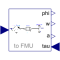
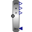

DirectInertiaInput/output block of a direct inertia model |

|
Diagram
{kind=link}
Information
This information is part of the Modelica Standard Library maintained by the Modelica Association.
A rotational component with pure signal interface which can be applied for
a FMU (Functional Mock-up Unit)
exchange.
The input torque tauDrive is applied on one side of a rotational
component with inertia whereby the input torque tau is applied
on the other side of it.
See also
Parameters (1)
| J |
Value: 1 Type: Inertia (kg·m²) Description: Inertia |
|---|
Connectors (5)
| tauDrive |
Type: RealInput Description: Accelerating torque acting at flange (= -flange.tau) |
|
|---|---|---|
| phi |
Type: RealOutput Description: Inertia moves with angle phi due to torque tau |
|
| w |
Type: RealOutput Description: Inertia moves with speed w due to torque tau |
|
| a |
Type: RealOutput Description: Inertia moves with acceleration a due to torque tau |
|
| tau |
Type: RealInput Description: Torque to drive the inertia |
Components (3)
| inertia |
Type: Inertia |
|
|---|---|---|
| torqueSource |
Type: Torque |
|
|  | torqueToAngle |
Type: TorqueToAngleAdaptor |
Used in Examples (1)
|
Modelica.Mechanics.Rotational.Examples Example to demonstrate variants to generate FMUs (Functional Mock-up Units) |